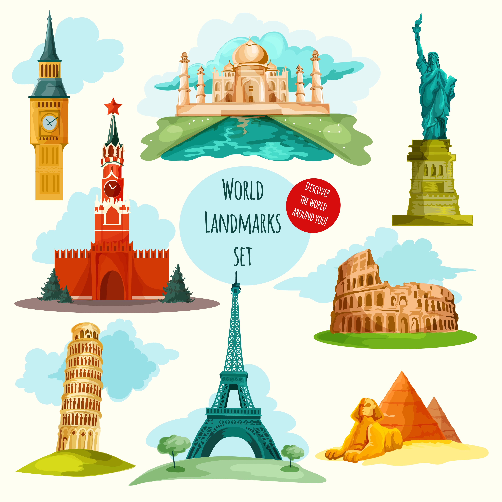

Any new Trip!!!
Travel to a new place makes you a kid again. It essentially puts you neurally in the same position as when you were a child. So what are the places you have been to??
Add New Vacation Trip